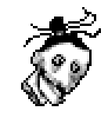
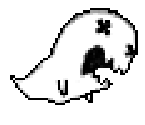
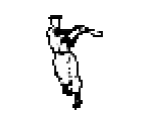
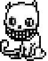
if you are avoiding any spoilers, some of the pictures in the art section and the story section as a whole will be pretty dangerous for you and they will bite you, be cautious.
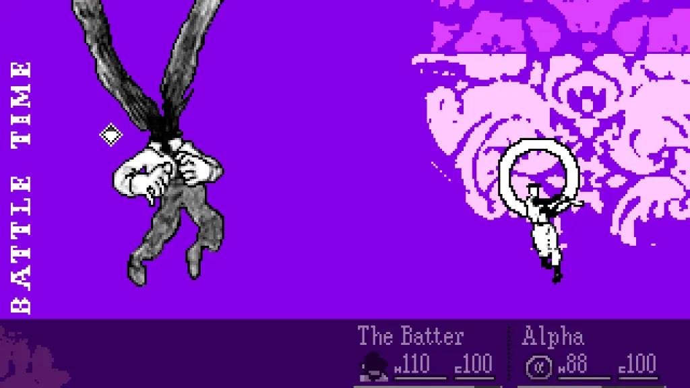
the only reason i gave this game a 3/5 is the gameplay of it. The gameplay loop works like so: you solve some puzzles, purify some spectres and then defeat the guardian of it's zone. do it 3 times and then you go to the room section which plays kinda different than the previous zones. Personally there is nothing wrong about the gameplay loop, but tbh the actual combat of this game sucks(im talking about the freeware version) it's just not fun at all. which i can understand because of it's rpgMaker limitations but I still enjoyed hylics even though that game was made with rpgMaker as well, but i didn't enjoy OFF's combat at all (battle screen and the sprites during battles look incredibly cool tho!)
The soundtrack of OFF is definitely one of the best I've ever experienced. I honestly don't think anyone other than Alias Conrad Coldwood could ever replicate this specific style ever again(which we can see by looking at the new soundtrack). Every single track of OFF is incredibly unique. they manage to be so disturbing when they need to be, very melancholic at other times, and then be high energy when the moment calls for it. My personal favorite was "Avatar Beat" I strongly recommend everyone to listen to the entire OST; you'll probably find a lot of familiar music in there.
Even though Mortis Ghost now has a whole different art style, I loved Mortis Ghost's old sketchy and messy art style that he used in OFF, It matches so well with it's world. And it is so original too, just check it out it’s insanely good:
The story of OFF is easily the best part of the game for me. i recommend you guys to play this game as blind as you could, believe me it's worth it. i had such a good time understanding how this bizarre world came to exist, normally i should run through a quick summary of the game but when i tried it i couldn't came up with a result i'm happy with. so today i will only explain the part where i believe the majority of the people who played OFF misunderstood.
-after this sentence i will assume that you've finished OFF before-
and that part where i think the majority of people misunderstood is... THE ROOM(yeah,no shit) so let me explain what happened in the scenes in The Room according to my own interpretation.
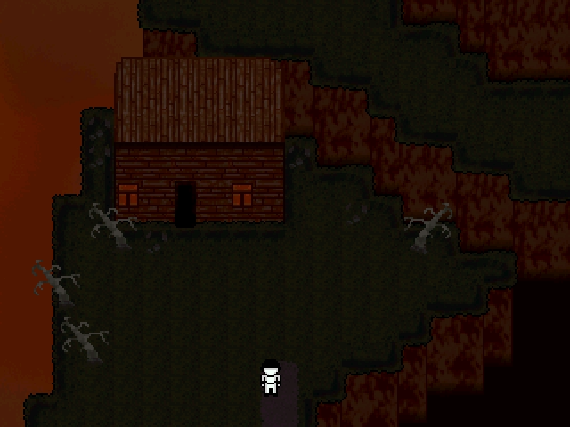
the outside area in Chapter 4: "I Had Three Friends" comes before the creation of the zones, and as you can see it gives off nuclear war vibes, so that's why I'm thinking it's a post-apocalyptic world.
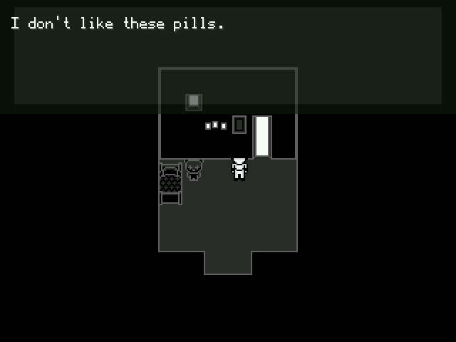
probably scientists experimenting pills on hugo
OFF takes place in a post-apocalyptic world. Before the apocalypse, people knew they would completely disappear from this world in a short period of time, so they needed to do something for the future of the human race: they picked a child named Hugo and experimented on him to give him the ability to turn his thoughts into materials.
after the scientists took him away, he couldn't see his family for a long time. He could only see his mama occasionally and missed her terribly, while his cold papa rarely came to see him. Even though he was terrified of his father and didn't like him, his papa had given him a comic book to help him have a little fun during those hard times. even though the comic book was VERY stupid.
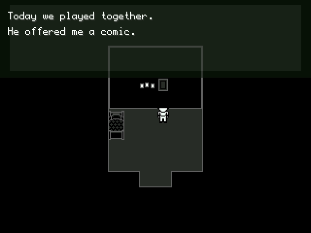
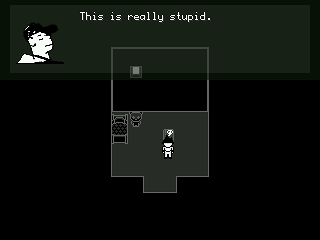
the batter's comment on the comic
Hugo read that book over and over again, holding on to the comic because he had nothing else left to embrace. Then the world was destroyed, and humanity mostly died out. but after the apocalypse, some mutants like talking cats and birds, enormous and teethy(?)[dedan btw] humans began to appear due to the effects of radiation
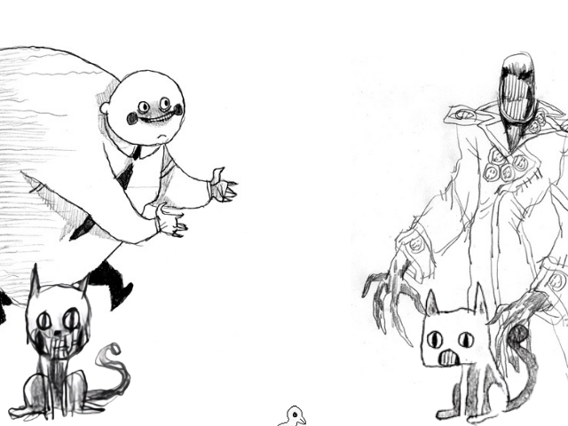
mutants
Hugo felt lonely after the apocalypse and used his power to create his mother(the queen) and since so much time had passed, he couldn't even remember her face(which is why the queen in game has no face) in his last memories of her, she was very protective, so the mother he created dedicated herself to protecting Hugo at all costs. and because hugo trusted his mother completely, he gave a large part of his creation power to her. as a result, his mother created the room to keep hugo safe and built hugo's room inside of it.
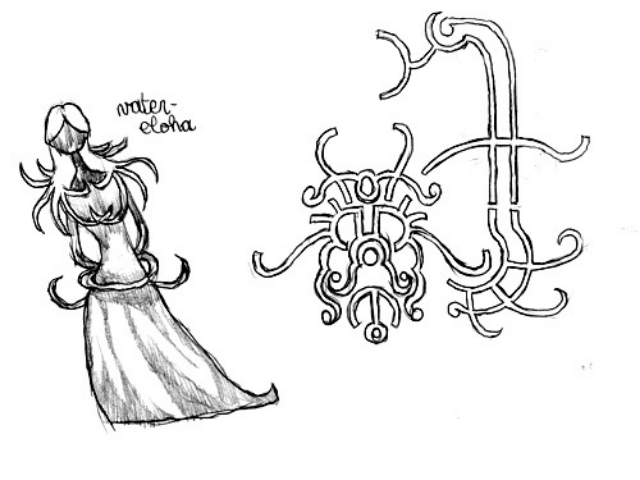
Hugo's "Mother"
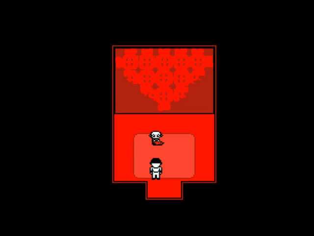
Hugo's Room
After this, Hugo found three mutant individuals: Dedan, Enoch, and Japhet (these are the guardians of the zones). Hugo helped them, and seeing the child's power of creation, they treated him kindly, but their goal was always to use him (we can see this in the third chapter of The Room). They told Hugo that if he gave them his power, they would build a good world together, so Hugo trusted them and gave them his creation power as well. Excited to tell his mother about these new friends he had met, Hugo went to "The Room."
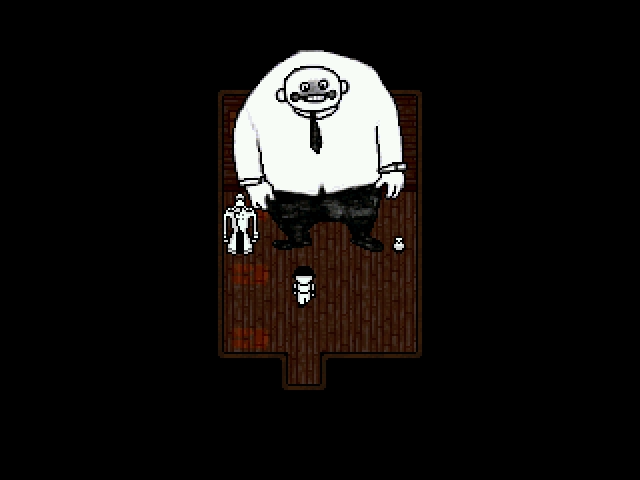
The Batter plays as Hugo in this part of the game so don't mind him
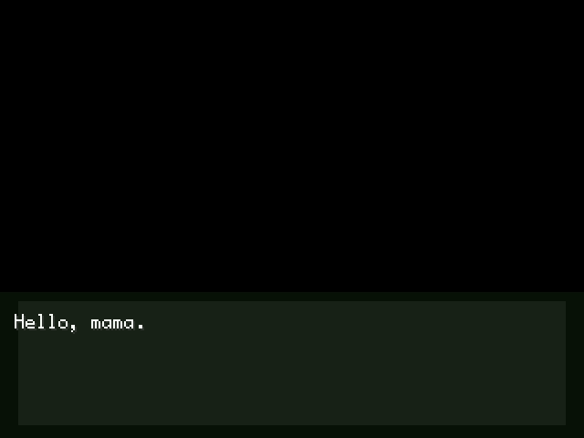
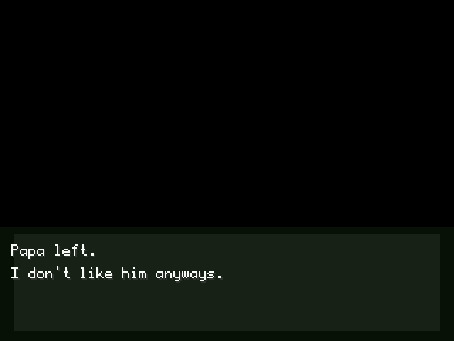
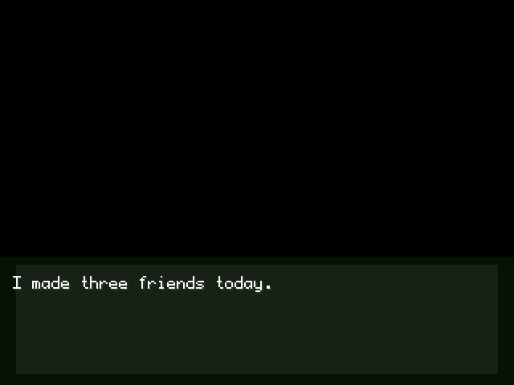
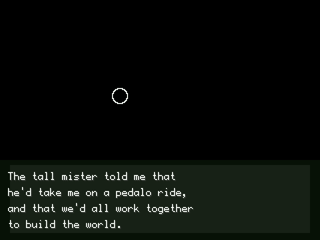
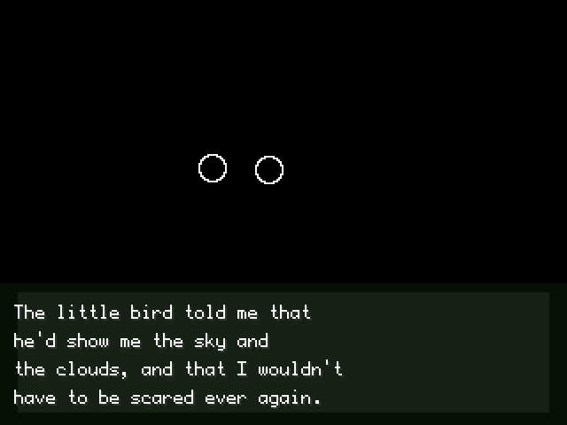
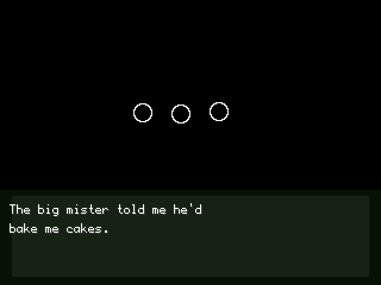
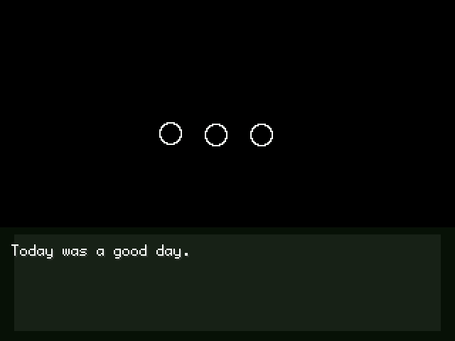
The Queen (since the mother is referred to as the Queen in the game, I will refer to her as the Queen from now on) now learned about these individuals and made them her pawns. Under the leadership of the Queen, they began to establish their own zones with their own ideals (these are Zone 0, Zone 1, Zone 2 and Zone 3 in the game).
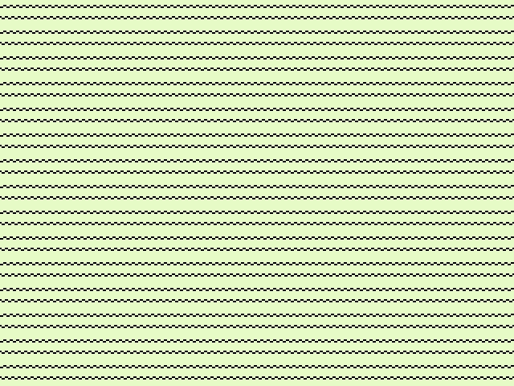
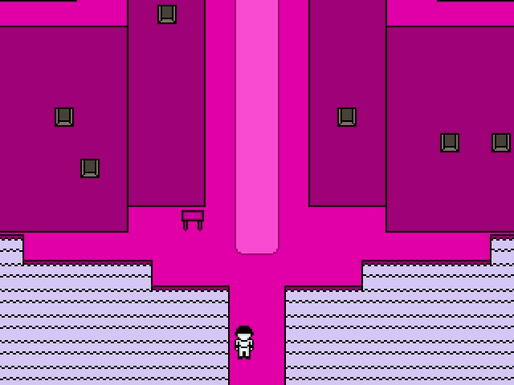
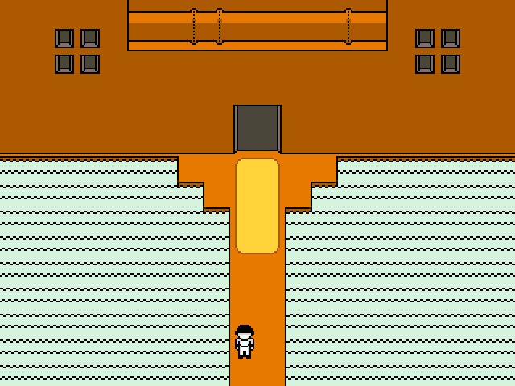
Right before these zones were created, the Queen locked hugo in his room, supposedly to protect him, but the purpose quickly changed from that. Under the purpose of "protecting" the Queen imprisoned hugo in his own room and removed everything in his room except for a big chunk of meat(since he needed to eat after all!). hugo couldn't be harmed since the source of creation came from him. Using protection as an excuse, she also cut off Hugo's communication with everyone and erased Hugo from everyone's memories (the newly released OFF comic explains this). Those very people who had once sworn to Hugo that everything would be better didn't even remember him anymore; they were just using him. the Queen and the Guardians harness the powers of Hugo's mental and physical power, stretching him to his limits. After everything is finished Hugo is left to decay, left alone in a small room as the new corrupted world starts to grow and so, the zones were created.
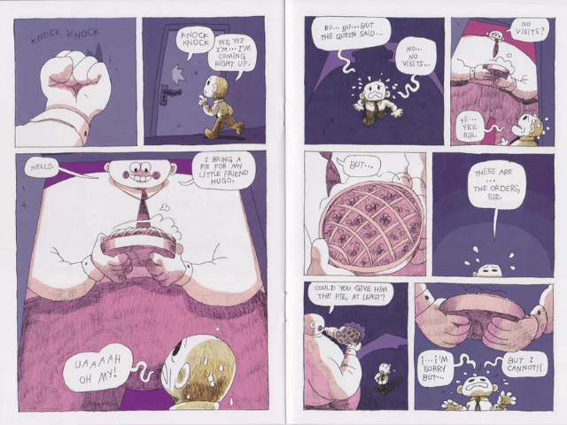
Mortis Ghost's new OFF comic: "OF"
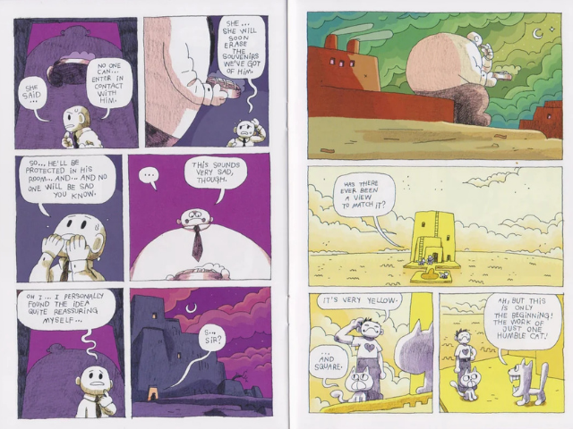
In the end, Hugo got ill(this is a symbolism of the world guardians have created is growing into something corrupted). he just wanted everything to end because he was in constant pain, hoping someone would come and rescue him, but that hope slowly disappeared. Hugo could not believe someone would come to save him from this pain, so he creates a villain. Hugo creates the cold and scary father figure from his mind to cleanse this hell and kill everyone including him, using the villain(ballman) from the comic book his father gave him as the base, he creates his father. And thus, The Batter is born.
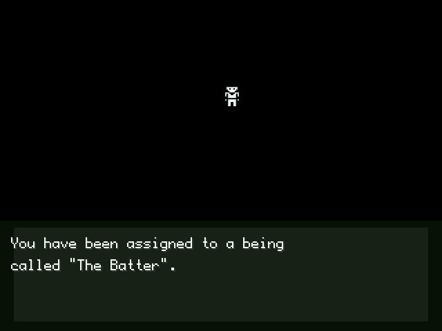
And this is where the game begins: The Batter is created, and we are chosen as the one who controls him. The Batter says that this world needs to be purified, and while saying this, he kills the newly arriving ghosts wandering around(which are signs of this world likely starting to fall apart.) We don't learn The Batter's true purpose until the end of the game; we just seem like someone going around killing ghosts in all the zones, which isn't the actual truth. Throughout the game, we visit all the zones and experience the disgusting world created by the guardians and the Queen. In Zone 1, materials are gathered. In Zone 2, workers rest and have fun. In Zone 3, those materials are processed, and so this world stays alive. However, by the time The Batter arrives, the world is barely functional anymore. we watch how these places barely live throughout the game, but to summarize it shortly: In Zone 1, we see the Elsens (the workers and citizens of these zones) working under really bad conditions because of Dedan's pressure, losing their humanity, becoming burnt and attacking us. In Zone 2, nobody can enjoy anything or even rest because of the constant fear that something bad will happen to them, especially since Japhet, the guardian of the zone, has been eaten by a cat. and lastly Zone 3 is a complete fiasco; Enoch, the zone's guardian, burns his own workers and turns their dust into sugar and gives it to his workers(This is likely the very reason ghosts started appearing in this world in the first place.), making the Elsens addicted to it. they can't even do their jobs properly.
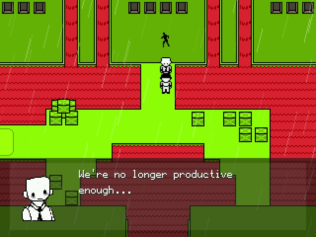
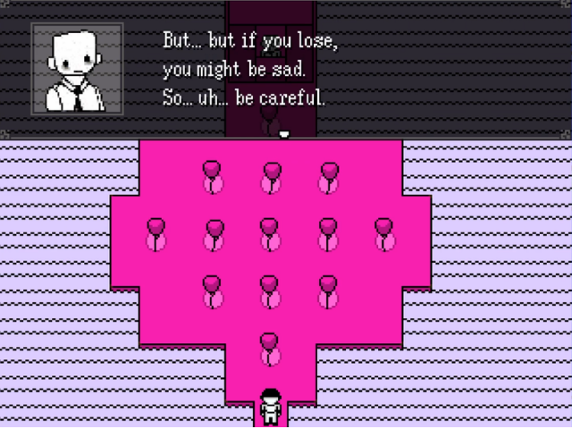
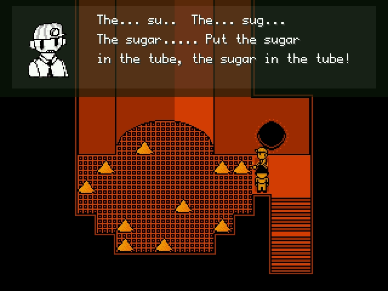
After purifying the zones(By purifying I mean killing the guardian of each zone, and if a zone's guardian dies, mutants called secretaries invade the whole zone and pretty much commit genocide.), we see scenes that piece together the events I mentioned at the very beginning of the story section. Then, we kill the Queen and Hugo(yes, we kill a child) and pull the switch of this world OFF(title drop :O).
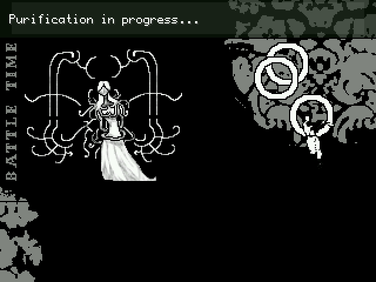
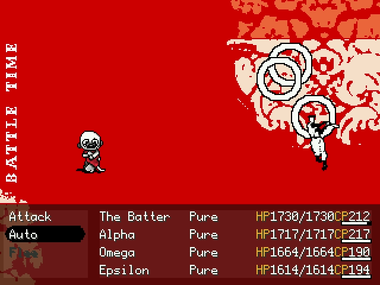
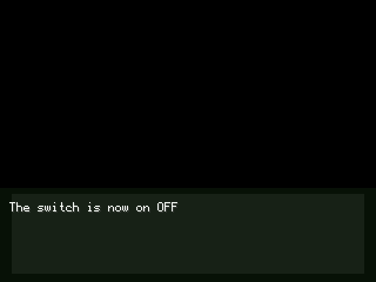
In the end the game asks you this: Even if a world is in such a bad state that even its own fricking god wants it to disappear (Hugo creating The Batter), since existence is always superior to non-existence, should this world continue, or is it more logical to destroy everything in such a corrupted, disgusting world and put an end to the existence of these suffering people?(you have to answer this question at the end of the game btw) I love this dilemma that OFF presents to us; it kept me thinking for a long time, and I still don't know the answer myself.
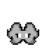
This OFF review cost me much more time than i think it would, but at least i'm happy with the outcome. For months i really wanted to talk about this game so much but i couldn't find any listener for it. So yeah thanks for listening to me, it means a lot :>
Thanks @danmaclover for voluntarily being an editor for this whole ramble, you've made this whole text much more readable. <3
And thanks for the Let's Play Archive by Panzer Skank